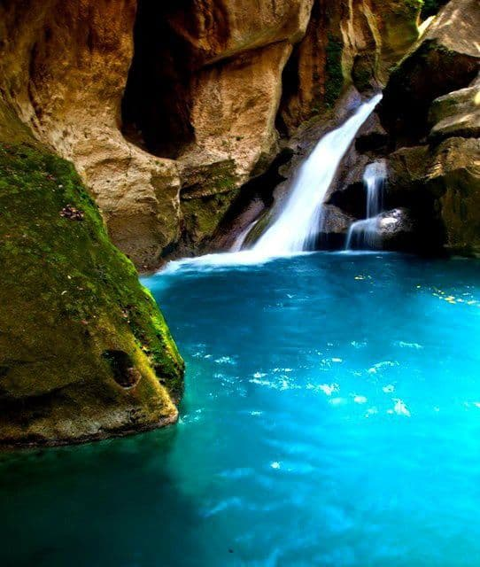
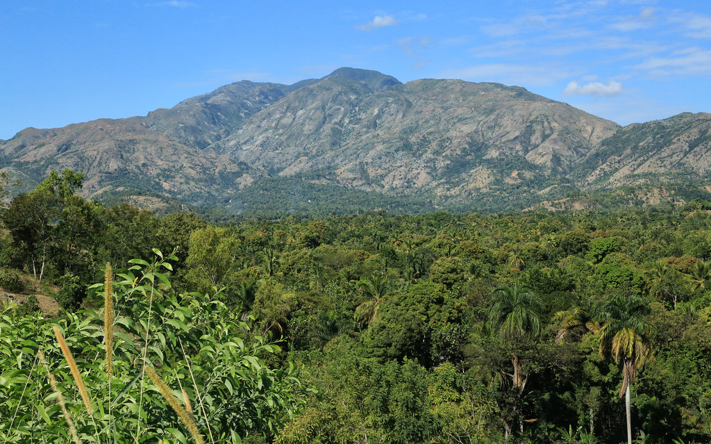

bassin bleu

Bassin Bleu, en créole haïtien Basenblé, est un site naturel situé à l'ouest de la ville de Jacmel, dans le département Sud-Est de la République d’Haïti. Il s'agit d'une suite de bassins qui s'étalent le long de la Petite Rivière de Jacmel.
Pour y accéder, il faut prendre la direction de La Vallée depuis Jacmel, puis Bassin-Bleu. Du lieu-dit Bassin-Bleu, la route jusqu'au site se fait à pied.
L'accès est y très difficile : il s'agit d'une piste sinueuse dans les mornes (montagnes) qui permet d'accéder au site. e site comporte quatre bassins :
Le bassin Cheval, profond de 9 pieds (soit 2.7 mètres) ;
Le bassin Yes, profond de 15 pieds (soit 4.6 mètres) ;
Le bassin Palmiste, profond de 57 pieds (soit 17.4 mètres) ;
Le bassin Clair, profond de 75 pieds (soit 22.8 mètres).
Ce dernier est de loin le plus connu et le plus spectaculaire : avec une chute d'une dizaine de hauteur qui tombe dans un bassin d'une eau bleu turquoise.
Pic macaya
Situe dans la péninsule Sud d’Haïti sur le massif de la hote,ladeuxième plus grande chaine de montagne du pays.Le pic macaya,uneréserve naturelle apréserver!!!ll est le geant pouvant faire renaitre la péninsule du Sud ‘Ouest d’Haiti.Un patrimoine culturo-historique extraordinaire
Fort Marfranc

le Fort Marfranc fait partie d'une vingtaine d'ouvrages militaires construits sur le territoire d'Haïti après l'indépendance en 1804 : ce système défensif était dirigé contre un éventuel retour des Français, anciens maîtres de la colonie de Saint-Domingue. La forteresse surplombe la ville de Jérémie. C'est Laurent Férou, un des chefs des insurgés haïtiens contre les Français, qui dirige la construction de ce fort dont il choisit l'emplacement. Le fort a été construit sur les vestiges de l'ancienne maison de maître d'un officier français de la première compagnie de gendarmes, le capitaine Marfranc, qui servit également sous les ordres du général polonais Wladyslaw Jablonowski1. Le fort s'étend également sur l'emplacement des anciennes cases d'esclaves. Aujourd'hui, Marfranc, (Mafran en créole), est une commune de l'arrondissement de Jérémie Dans l'enceinte de cette forteresse a été enterré un des signataires de l'acte d'indépendance d'Haïti, Laurent Férou, le créateur de ce fort, né sur l'habitation Pinot aux Côteaux, mort à Jérémie en 1806. Le Fort Marfranc est aujourd'hui presque entièrement détruit.